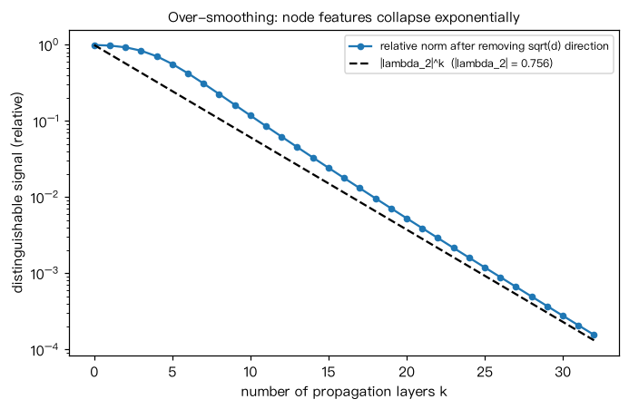

Example13 / 13
过平滑——反复做图卷积后节点表示趋于一致
对 BA 网络（200 个节点）的随机节点特征 X 反复左乘传播矩阵 Â（不加权重和非线性）， 记录第 k 层表示的“节点间差异”：每列特征减去其按 sqrt(度) 加权的投影后剩余部分的相对大小。 Â 的最大特征值为 1，对应特征向量与 sqrt(d̃) 成正比，其余特征值的绝对值小于 1， 所以 Â^k X 收敛到只由度决定的秩 1 结构，节点之间的可区分信息指数衰减（Li 等 2018）。 解读：这解释了为什么 GCN 一般只用 2–3 层，以及残差连接、跳跃连接等改进的动机。
Output输出图

Output文字输出
k = 0：去除主方向后的相对范数 = 0.9971 k = 1：去除主方向后的相对范数 = 0.9785 k = 2：去除主方向后的相对范数 = 0.9298 k = 4：去除主方向后的相对范数 = 0.7086 k = 8：去除主方向后的相对范数 = 0.2260 k = 16：去除主方向后的相对范数 = 0.0178 k = 32：去除主方向后的相对范数 = 0.0002 Â 的最大特征值 = 1.000，次大绝对值 = 0.756（决定衰减速度）
Code代码
# 对 BA 网络（200 个节点）的随机节点特征 X 反复左乘传播矩阵 Â（不加权重和非线性），
# 记录第 k 层表示的“节点间差异”：每列特征减去其按 sqrt(度) 加权的投影后剩余部分的相对大小。
# Â 的最大特征值为 1，对应特征向量与 sqrt(d̃) 成正比，其余特征值的绝对值小于 1，
# 所以 Â^k X 收敛到只由度决定的秩 1 结构，节点之间的可区分信息指数衰减（Li 等 2018）。
# 解读：这解释了为什么 GCN 一般只用 2–3 层，以及残差连接、跳跃连接等改进的动机。
import numpy as np
import networkx as nx
G = nx.barabasi_albert_graph(200, 3, seed=0)
A = nx.to_numpy_array(G); At = A + np.eye(len(A)); d = At.sum(1)
Ahat = At / np.sqrt(np.outer(d, d))
u = np.sqrt(d) / np.linalg.norm(np.sqrt(d)) # Â 的主特征向量
X = np.random.default_rng(0).normal(size=(len(A), 16))
H = X.copy()
for k in range(0, 33):
if k in (0, 1, 2, 4, 8, 16, 32):
resid = H - np.outer(u, u @ H)
print(f"k = {k:2d}：去除主方向后的相对范数 = {np.linalg.norm(resid) / np.linalg.norm(H):.4f}")
H = Ahat @ H
ev = np.sort(np.abs(np.linalg.eigvalsh(Ahat)))[::-1]
print(f"Â 的最大特征值 = {ev[0]:.3f}，次大绝对值 = {ev[1]:.3f}（决定衰减速度）")
# 作图：去除主方向后的相对范数随传播层数 k 衰减，并与 |lambda_2|^k 对照
import matplotlib.pyplot as plt
H = X.copy(); rel = []
for k in range(33):
rel.append(np.linalg.norm(H - np.outer(u, u @ H)) / np.linalg.norm(H)); H = Ahat @ H
fig, ax = plt.subplots(figsize=(6.4, 4.2))
ks = np.arange(33)
ax.semilogy(ks, rel, "o-", ms=4, label="relative norm after removing sqrt(d) direction")
ax.semilogy(ks, rel[0] * ev[1] ** ks, "k--", label=f"|lambda_2|^k (|lambda_2| = {ev[1]:.3f})")
ax.set_xlabel("number of propagation layers k"); ax.set_ylabel("distinguishable signal (relative)")
ax.set_title("Over-smoothing: node features collapse exponentially", fontsize=10); ax.legend(fontsize=8)
plt.tight_layout(); plt.show()Run在浏览器中运行
首次加载 Python 环境约需 20–40 秒；可以修改参数后重新运行。